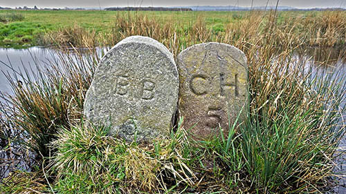
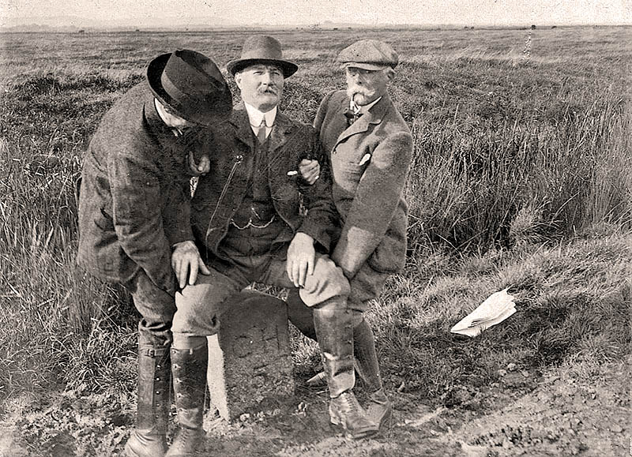
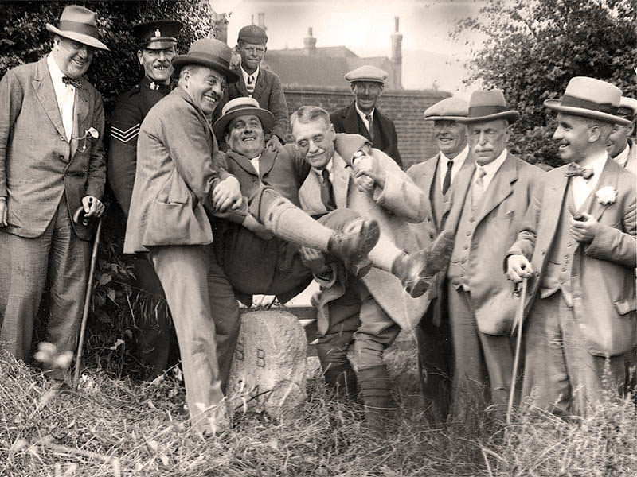
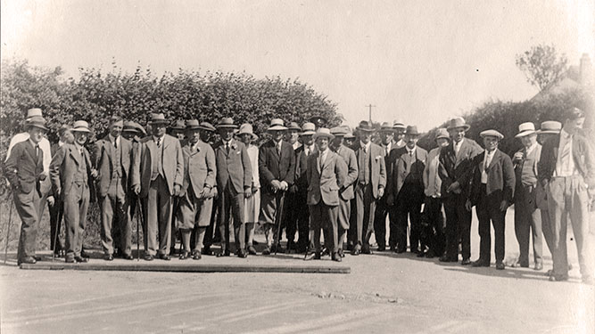

Boundary Stones
In 1859 a local builder, Robert Burchell, signed a contract with the Corporation of Hastings to supply 60 stones to mark the boundaries of the Borough of Hastings and the Liberty of the Sluice at Pevensey.
After the incorporation of Bexhill Borough, it was decided in 1909 that another set of 63 large stones should be placed along the 12 mile perimeter of Bexhill. Starting from Normans Bay, up through Lunsford's Cross, along to Watermill Lane, down through Combe Valley, finishing at Glyne Gap.
Made of Cornish granite, at a cost of 15 shilling each (about £3,700 in total today) These were all sequentially numbered and prefixed with BB.[28]
A number of these stones have disappeared over the years, either through boundary adjustments, development, bank erosion or general neglect. In a 2018 survey only 30 of the Bexhill stones have been found - one in Hastings Museum (BB46).


Hooe Level, October 1909.
© Bexhill Museum

Lunsford's Cross, June 1925.
© Bexhill Museum

Beating the bounds, July 1928. Note the large plank used to cross ditches and scale hedges.
© Bexhill Museum